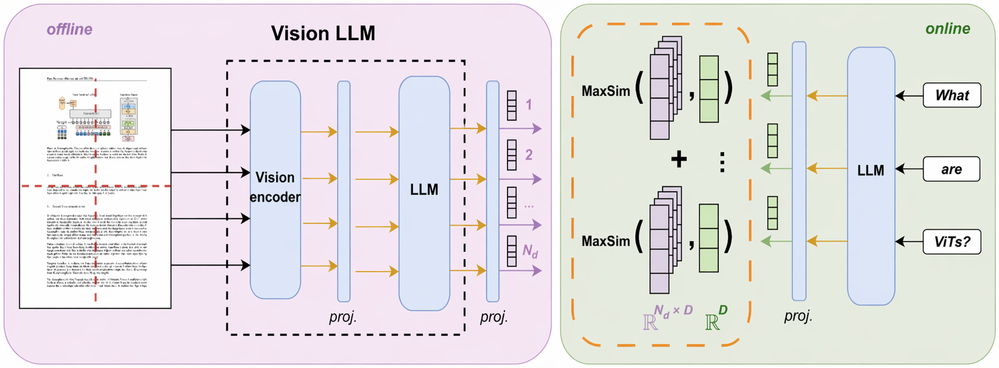
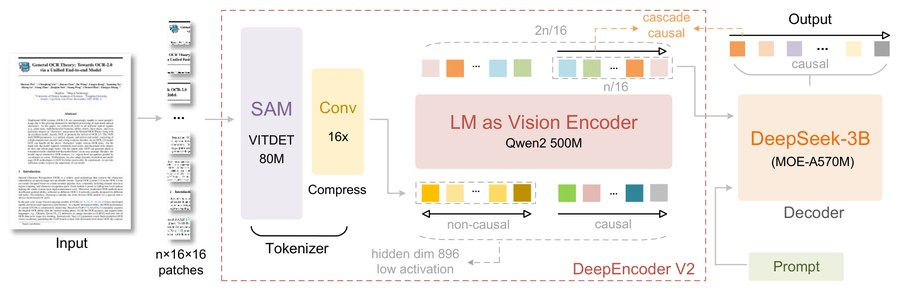

Why hybrid RAG?
RAG pipelines over visually rich PDFs face a basic tension: the answer may live in text (paragraphs, tables) or in visual elements (charts, figures, handwriting) that text extractors drop or flatten.
Two retrieval paradigms have emerged:
- Textual retrieval: parser → markdown → dense embedding. Precise on text; blind to figures.
- Visual retrieval: page-image encoder (ColPali / ColEmbed). Sees layout and figures; less precise on fine-grained text.
Hybrid concatenates the top-k of both streams and feeds them to a multimodal generator. The intuition: the two streams capture complementary evidence. Does that hold in practice?
Visual retrieval
Visual retrieval: each PDF page is encoded as pixels by a vision-language model, once, offline. No OCR, no markdown, no chunking. A page is its own atom. At query time, pages are ranked by image-level similarity to the query.
ColPali (Faysse et al., 2025)
Late interaction: encodes each page into one embedding per image patch, and each query into one embedding per token. Scoring uses MaxSim: for every query token, find its closest page patch; sum those best-match scores across all tokens. A query asking "what is the Q3 revenue?" can match "Q3" to the right table column and "revenue" to the right row, something impossible when the whole page is collapsed into a single vector.

ColEmbed (Xu et al., 2025)
Same late-interaction architecture, two upgrades: (i) stronger backbone, Llama-Nemotron (NVIDIA's document-focused VLM family); (ii) broader synthetic query–page training data with hard-negative mining.
The ViDoRe v3 benchmark
Loison et al. (2026): 10 corpora, 26 000 pages, 3 099 human-verified queries translated into 6 languages. We evaluate on 5 public subsets (3 English + 2 French), totalling 10 673 pages and 2 132 queries.
What makes it hard
- Visually rich documents: annual reports, scientific books, pharma regulations. Tables, charts, figures carry real evidence.
- 7 query types of very different difficulty: from open-ended synthesis to single-number lookup.
- Cross-lingual: queries in 6 languages paired with english or french source documents.
- Decoupled evaluation: the paper reports retrieval quality (NDCG@10) and end-to-end answer accuracy (pass@1) separately, and shows the two disagree: the best retriever is not always the best generator.
Method
Question: with the text stream fixed at DeepSeek-OCR-2 + Jina v4 + zerank-2, does adding a visual retrieval stream (ColEmbed) improve end-to-end answer accuracy?
Model choices
- DeepSeek-OCR-2
- open-weights document OCR with layout-preserving markdown (HTML tables, LaTeX); designed for faithful reconstruction
- qwen3.5:35b
- multimodal (text + image) generator, Q4-quantized MoE, fits on one 48 GB GPU; 262 k context
- llama3.1:8b
- judge in a different model family (Meta vs Alibaba) to reduce self-preference bias; officially multilingual (EN + FR covered)
All components are open-weights and run on a single GPU. We reproduce the paper's findings without the closed Gemini 3 Pro / GPT-5.2 stack.
DeepSeek-OCR-2
Instead of consuming visual tokens from top-left to bottom-right, learnable causal flow queries re-order the tokens to a more logical reading path.

Results
Retrieval (NDCG@10)
| Subset | colembed (image) | jina + zerank-2 (text) |
|---|---|---|
| computer_science (EN) | 78.0 | 82.4 |
| finance_en (EN) | 68.6 | 65.7 |
| pharmaceuticals (EN) | 67.2 | 65.1 |
| physics (FR) | 47.8 | 46.6 |
| finance_fr (FR) | 47.6 | 48.1 |
| avg | 61.8 | 61.6 |
End-to-end (pass@1)
| Subset | closed-book | colembed (image) | jina + zerank-2 (text) | hybrid |
|---|---|---|---|---|
| computer_science | 91.6 | 93.0 | 95.3 | 95.3 |
| finance_en | 56.0 | 74.8 | 79.0 | 81.6 |
| pharmaceuticals | 68.4 | 83.2 | 88.5 | 89.3 |
| physics | 87.8 | 83.1 | 90.1 | 89.7 |
| finance_fr | 40.6 | 70.3 | 80.3 | 77.2 |
| avg | 68.9 | 80.9 | 86.6 | 86.6 |
Where does retrieval actually help?
pass@1 (%) per query type:
| query type | closed | image | text | hybrid | example query |
|---|---|---|---|---|---|
| numerical | 36.4 | 70.4 | 70.7 | 74.1 | "What is the difference in the total number of FAERS reports of 2015 and 2018?" |
| extractive | 54.3 | 77.4 | 83.1 | 82.6 | "What was Bank of America's net income in 2024?" |
| multi-hop | 68.6 | 84.7 | 84.7 | 91.5 | "What is a while loop, and how is it used to create a nested loop?" |
| enumerative | 60.3 | 75.8 | 83.5 | 80.9 | "What are the five phases of relational database design (RDD)?" |
| boolean | 72.1 | 85.0 | 93.2 | 87.8 | "Did Bank of America's efficiency ratio improve in 2024?" |
| compare-contrast | 71.9 | 80.8 | 84.6 | 85.3 | "How do heuristics differ from process patterns?" |
| open-ended | 82.8 | 82.6 | 91.9 | 91.5 | "How does REMS help in managing the opioid crisis?" |
Does image retrieval help?
Sometimes. It depends on the query.
When images help
- Multi-hop (+6.8 over text): evidence spans multiple pages; the two streams retrieve partly different pages, giving the generator broader coverage.
- Numerical (+3.4): visual table layout (rows, columns, cell alignment) preserves structure that OCR partly loses.
When images don't help (or hurt)
- Boolean (−5.4): text already retrieves the fact; extra image pages dilute the prompt and push the generator toward hedged, less decisive answers.
- Extractive / enumerative / compare-contrast / open-ended: flat (±1 pt). The answer lives in a text span the text retriever already finds.
Takeaways
- The 86.6% tie hides structured query-type variation. Hybrid wins on multi-hop (+6.8 pts) and numerical (+3.4); text wins on boolean (+5.4). The right choice depends on your workload's query mix.
- A strong text pipeline is already very competitive. DeepSeek + Jina + zerank-2 matches hybrid at half the retrieval cost. Images add value only for multi-hop and numerical workloads.
- Retrieval matters most where the LLM's prior knowledge runs out. Gains over closed-book: +37.7 pts on numerical, +28.3 on extractive, only +8.7 on open-ended.
- The open-source generator is likely the bottleneck. ViDoRe v3 reports +2.6 pts hybrid gain with Gemini 3 Pro. Our null result reflects a weaker vision stack, not uninformative images.
Limitations
LLM choices
- Generator (qwen3.5:35b): its vision stack is weaker than frontier closed models. The paper reports +2.6 pts hybrid gain with Gemini 3 Pro; our null result is likely generator-limited, not a property of the image stream.
- Judge (llama3.1:8b): LLM-as-judge has a known verbosity bias. Hybrid answers tend to be longer, so some gains could be style-driven rather than content-driven.
Benchmark and evaluation design
- Binary pass@1: a near-miss and a complete miss are treated identically. No partial credit.
- No human spot-check: all correctness judgments come from the LLM judge with no human validation.
- Fixed fusion strategy: always top-5 text + top-5 image with no deduplication. The generator can receive the same page twice, wasting context.
- Domain-specific corpora: CS textbooks, finance reports, pharma regulations. Results may not transfer to general-purpose RAG.
Future work
- Rerun with stronger multimodal generators (Gemini 3 Pro, Qwen3-VL-235B) to isolate the generator-capability effect.
- Apply a controlled-verbosity prompt and swap the judge to rule out verbosity bias.
- Test adaptive fusion strategies (weighted combination, deduplication, query-type routing).
- Figure captioning to close the figure-placeholder blind spot in the text stream.